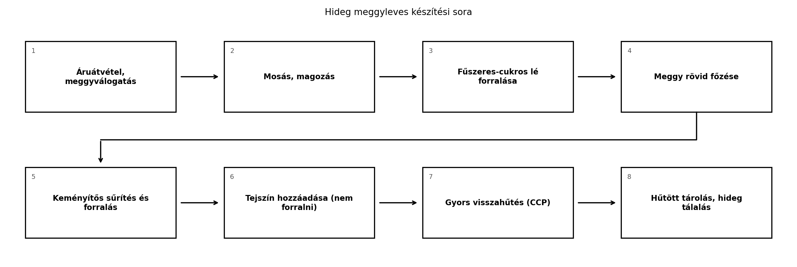

Kora nyári napon vendég hideg meggylevest kér, diétás vendég nyáklevest, egy másik asztalnál pedig hideg uborkalevest. A szakácsnak mindhárom levesnél ugyanarra kell figyelnie: az íz mellett a leves akkor biztonságos, ha a főzés után gyorsan lehűl, és hidegen, a HACCP-terv szerinti hőmérsékleten tálalható. Ha a gyümölcsleves lassan hűl, a baktériumok elszaporodhatnak, és a vendég ételmérgezést kaphat. Ezért ebben az alfejezetben a levescsoportot a technológia és a higiénia együtt tanítja.
A gyümölcslevesek, a nyáklevesek és a hideg zöldséglevesek közös jellemzője, hogy a leves állaga és tálalási hőmérséklete erősen függ a sűrítéstől és a hűtéstől.
| Levescsoport | Alapanyag | Sűrítés | Jellemző tálalási hőmérséklet |
|---|---|---|---|
| Gyümölcsleves | gyümölcs, víz, cukor, fűszer | keményítő, tejszín | hidegen vagy melegen |
| Nyákleves | gabonapehely, rizs, árpa, víz/húsleves | a nyákanyag önmaga sűrít | melegen |
| Hideg zöldségleves | uborka, joghurt, kefir, zöldségpüré | joghurt, tejföl, püré | hidegen |
A hőmérsékleti határokat a vendéglátó üzlet HACCP-terve rögzíti; a tanulási értékeket jelöljük.
Definíció. A gyümölcsleves friss vagy fagyasztott gyümölcsből, vízzel, cukorral és fűszerekkel készített leves, amelyet keményítővel és/vagy tejszínnel sűrítenek, és hidegen vagy melegen tálalnak.
A legismertebb magyar gyümölcsleves a meggyleves. Készülhet még almából, szilvából, őszibarackból, erdei gyümölcsből vagy vegyes gyümölcsből. A gyümölcs savanyúságát cukorral ellensúlyozzuk; a fűszerek jellemzően fahéj, szegfűszeg és citromhéj.
A sűrítés két fő módja:
A hideg gyümölcsleves elkészítéséhez a forró, kész levest gyorsan le kell hűteni. A lassú hűtés hibája, hogy a leves sokáig a veszélyes zónában marad, és a baktériumok szaporodni kezdenek.
Allergén. A tejszínes gyümölcsleves allergénje a tej (laktóz). A keményítő általában nem allergén, de a csomagolást ellenőrizni kell, mert a gyártóüzem dolgozhat gluténnel is. A vendég tájékoztatása kötelező.
Definíció. A nyákleves gabonaféléből, rizsből vagy árpából, bő vízzel vagy szűrt húslevessel, lassú főzéssel készülő, kímélő leves. A „nyák” a gabonaszemekből kioldódó keményítő- és rostanyag, amely enyhén sűrű, selymes állagot ad.
A nyákleveseket elsősorban kímélő diétában, például gyomorkímélő vagy felszívódási zavar esetén alkalmazzák. Az alapanyag szerint:
A nyákleves készítése:
Higiénia. A nyákleves magas nedvesség- és keményítőtartalma miatt gyorsan romlik. Hűtése ugyanolyan szigorú, mint a gyümölcslevesé: a főzés után gyors visszahűtés szükséges, és hűtőben, lefedve tárolandó.
A hideg zöldséglevesek jellemzője, hogy alapanyagukat nyersen, párolva vagy pürésítve készítik, majd hidegen tálalják. A legismertebb a hideg uborkaleves és a joghurtleves.
Az uborkaleves alapja reszelt uborka, joghurt, kefir vagy tejföl, víz, fokhagyma, kapor, só, kevés cukor és citromlé.
Allergén. A joghurtos vagy tejfölös uborkaleves tej allergént tartalmaz.
A joghurttal készült hideg leves hasonló elvű: joghurt, víz, fokhagyma, kapor, só, esetleg uborka vagy főtt zöldségpüré. Hidegen, frissen tálaljuk.
Adagszám: 10 adag
Adagsúly: kb. 300 ml/adag
| Nyersanyag | Mennyiség 10 adagra | Megjegyzés |
|---|---|---|
| Meggy (magozott) | 1 200 g | friss vagy fagyasztott; allergén nincs |
| Víz | 1 800 ml | |
| Kristálycukor | 160 g | ízlés szerint |
| Citromhéj | 1/2 db | alaposan mosott citrom héja |
| Fahéjrúd | 1 db | |
| Szegfűszeg | 4 db | |
| Só | 1 g | |
| Burgonyakeményítő | 40 g | hideg vízben elkeverve |
| Hideg víz a keményítőhöz | 120 ml | |
| Tejszín (30% zsírtartalmú) | 250 ml | allergén: tej |
Allergén: tej (tejszín).
Eszközök, gépek: lábas, keverőlapát, mérőedény, kis
tálka, szita, maghőmérő, jégfürdő, hűtőszekrény.
Előkészítés
Elkészítés
Kritikus pont: a gyümölcsleves hűtése
| Veszély | Felügyelet | Kritikus határ | Helyesbítés | Dokumentálás |
|---|---|---|---|---|
| Baktériumok szaporodása a veszélyes zónában | mérjük az időt és a maghőmérsékletet a főzés után; hűtőhőmérsékletet | gyors visszahűtés a könyv egységes szabálya szerint: a főzés végétől 2 órán belül 20 °C alá, további 4 órán belül 5 °C alá; tárolás legfeljebb 5 °C (tanulási érték; ellenőrizendő: NÉBIH-útmutató / HACCP-terv) | jeges vízfürdő, lapos edény, jégrúd alkalmazása; ha a leves tartósan a veszélyes zónában állt, kidobjuk | hűtési napló, hűtőhőmérséklet-ellenőrző lap |
Hogy miért kritikus pont a hűtés, azt az alábbi grafikon mutatja egy szemléltető számítással. Mindhárom görbe a főzés végén, 90 °C-ról indul; a kör a 2 órás (20 °C), a négyzet a 6 órás (5 °C) ellenőrzőpont. A jeges vízfürdőben, keverve hűtött leves kb. 40 perc alatt hűl 20 °C alá és kb. másfél óra alatt 5 °C alá, tehát a szabályt bőven teljesíti; a lapos GN-edényben, hűtőben hűlő leves csak kb. 2 óra alatt éri el a 20 °C-ot és kb. 5 óra alatt az 5 °C-ot, vagyis mindkét ponton épp a határon van, tartalék nélkül (ezt üzemben maghőmérővel kell ellenőrizni); a pulton hagyott fazék (a lenti Valós eset hibája) nyolc óra múlva is a veszélyes zónában van.
A görbék modellből számolt tanulási értékek, nem mérések: a valós hűlési idő az edénytől, a mennyiségtől, a rétegvastagságtól és a hűtőtől függ, ezért a hűtést mindig maghőmérővel ellenőrizd és dokumentáld. A tanulság: a hűtőszekrény önmagában lassú; a forró levest előbb jeges vízfürdőben, keverve (vagy sokkolóban) hűtsd le, és csak utána tedd a hűtőbe. A HTML-kiadásban beállíthatod a kezdőhőmérsékletet, a rétegvastagságot, a hűtési módot és a környezeti hőmérsékletet, és leolvashatod, mikor éri el a leves a 20 °C-ot és az 5 °C-ot, teljesül-e a két ellenőrzőpont, és hány percet tölt a veszélyes zónában.
Készentartás és tálalás. A hideg meggylevest jól lehűtve, merőkanállal adagoljuk. A levesben gyümölcsdarabok maradnak. Díszíthetjük kevés tejszínhabbal, citromfűvel vagy mentalevéllel.
Minőségi követelmények. A leves színe élénk, világos piros; állaga enyhén sűrű, selymes; a gyümölcs kissé puha, de nem szétfőtt; íze édes-savanykás, fűszeres; tálaláskor hideg.
Tipikus hibák és javításuk. Ha a keményítő csomós, az ok a hideg víz nélküli bekeverés; a csomós levest szűréssel vagy botmixerezéssel javíthatjuk, de a minősége romlik. Ha a tejszín kicsapódott, az ok a forralás; ezt már nem lehet helyrehozni, a levest csak újra simítással, szűréssel menthetjük, de az állaga más lesz. Ha a leves romlott szagú vagy savanykás-élesztős, az ok a lassú hűtés; ilyenkor a levest ki kell dobni.
Változatok. Almából, szilvából, vegyes erdei gyümölcsből is készíthető. A gyümölcsöt pürésíthetjük is; ekkor a leves sűrűbb, krémesebb. Melegen is tálalható; ekkor a készentartás hőmérséklete legalább 63 °C (tanulási érték; ellenőrizendő: HACCP-terv).

1. példa – bruttó szükséglet magozott meggyhez
Adott: 8 adag hideg meggyleveshez 960 g magozott meggyet ír elő a
recept. A friss meggy tisztítási vesztesége 12%. Keresett a bruttó meggy
mennyisége.
Képlet:
Behelyettesítés:
Kerekítve: 1 091 g bruttó meggy szükséges.
2. példa – keményítő mennyisége
Adott: 4,5 l levest 1,5% keményítővel sűrítünk. A keményítőt hideg
vízzel 1:3 arányban keverjük. Keresett a keményítő és a víz
mennyisége.
Feltételezzük, hogy 1 l leves tömege 1 000 g.
Keményítő:
Hideg víz:
Kerekítve: 68 g keményítőt 203 ml hideg vízben keverünk el.
Egy kisebb étterem konyháján a szakács nagy adag hideg meggylevest készített délután, majd a forró lábast a meleg konyhán hagyta kihűlni. Este a rendezvény miatt elfelejtette betenni a hűtőbe. Másnap reggel a leves felülete enyhén habos volt, illata élesztős, savanykás. A szakács megkóstolta: a leves nem friss. A konyhafőnök az egész adagot kidobatta, és hűtési naplóba rögzítette az esetet. A tanulság: a hideg levesek hűtése nem kényelmi művelet, hanem kritikus pont; a gyors visszahűtést és a hűtőtárolást azonnal el kell végezni.
1. feladat (A) Sorold fel a gyümölcslevesek két fő sűrítőanyagát, és mondd ki a tejszín hozzáadásának szabályát.
2. feladat (A) Egy recept 10 adag hideg meggyleveshez 1 200 g magozott meggyet ír elő. Hány gramm bruttó friss meggy szükséges, ha a tisztítási veszteség 14%?
3. feladat (B) Rakd helyes sorrendbe a hideg
meggyleves készítésének lépéseit:
a) tejszín hozzáadása
b) fűszeres-cukros lé felforralása
c) keményítő hideg vízben elkeverése
d) gyors visszahűtés
e) meggy rövid főzése
f) keményítőoldat hozzáöntése, forralás
4. feladat (B) Mennyi keményítő és hány ml hideg víz kell 6 l leves sűrítéséhez, ha 2% keményítőt használunk, és a keményítőt 1:3 arányban keverjük hideg vízzel?
5. feladat (C) Hogyan alakítanád át a hideg meggylevest tejallergiás vendég számára? Nevezz meg legalább egy biztonságos helyettesítőt, és mondd ki, mire kell figyelned a tájékoztatásnál.
6. feladat (C) Tervezz hűtési tervet egy 15 l-es adag hideg meggyleveshez a főzés befejezésétől a hűtőbe helyezésig.
7. feladat (D) A gyakorlati útmutató mintája alapján készíts rövid munkalapot a hideg uborkaleveshez: anyagok, lépések, kritikus pontok.
Önellenőrzés – válaszok
1. Hamis. A tejszínt a tűzről levett leveshez adjuk, és már nem
forraljuk, mert a tejszín kicsapódik.
2. Kb. 5–60 °C (ellenőrizendő: NÉBIH-útmutató).
3. A rizsnyákleves gluténmentes; a zab és az árpa glutént
tartalmaz.
4. A gyors visszahűtés, majd a hűtőtárolás.
5. Jól lehűtve, hidegen, a tárolási határral összhangban legfeljebb 5
°C-on, rövid ideig (tanulási érték; ellenőrizendő: az üzemi
előírás).
1. feladat megoldása
A gyümölcslevesek fő sűrítőanyaga a keményítő és a
tejszín. A tejszínt a tűzről levett leveshez adjuk;
utána nem forraljuk, mert a tejszín kicsapódik.
2. feladat megoldása
Adott: nettó
,
hulladék
.
Képlet:
Behelyettesítés:
Kerekítve: 1 395 g bruttó friss meggy szükséges.
3. feladat megoldása
Helyes sorrend: b) fűszeres-cukros lé felforralása → e) meggy rövid
főzése → c) keményítő hideg vízben elkeverése → f) keményítőoldat
hozzáöntése, forralás → a) tejszín hozzáadása → d) gyors
visszahűtés.
4. feladat megoldása
6 l = 6 000 g leves.
Keményítő:
Hideg víz:
Kerekítve: 120 g keményítő és 360 ml hideg víz.
5. feladat megoldása
A tejszín helyettesíthető növényi főzőkrémmel, például zab-, rizs- vagy
kókusztejszínnel (a zabtejszín glutént tartalmazhat – jelölendő). A
kókusztejszín nem tejallergén, de a gyártói címkét mindig ellenőrizni
kell, mert a termék tartalmazhat tejet vagy keresztszennyeződhetett. A
vendéget pontosan tájékoztatni kell az összetevőkről, és az elkülönített
eszközökkel kell dolgozni.
6. feladat megoldása
Hűtési terv: a forró levest lapos edénybe öntjük, jeges vízfürdőbe
állítjuk, és 10 percenként keverjük. Maghőmérőt használunk. Cél: a főzés
végétől 2 órán belül 20 °C alá, további 4 órán belül 5 °C alá (tanulási
érték; ellenőrizendő: HACCP-terv). Közben hűtőszekrénybe tesszük,
lefedve; a hűtő hőmérséklete legfeljebb 5 °C (ellenőrizendő). Az edényre
dátumot és időt írunk.
7. feladat megoldása
Munkalap: hideg uborkaleves
Anyagok 10 adaghoz (tanulási adatok): 1 500 g uborka, 600 g natúr
joghurt, 400 ml hideg víz, 10 g fokhagyma (kb. 2 gerezd), 10 g só, 5 g
cukor, 15 g kapor, 25 ml citromlé.
Lépések: 1) uborkát mosunk, lereszeljük, sózzuk, állni hagyjuk; 2)
joghurtot vízzel simára keverjük; 3) hozzáadjuk a kinyomkodott uborkát,
zúzott fokhagymát, aprított kaprot, cukrot, citromlevet; 4) sóval
ízesítjük; 5) hűtőszekrényben alaposan lehűtjük.
Kritikus pont: hűtés, tálalás hidegen; allergén: tej.
A gyümölcslevesek gyümölcsből, vízből, cukorral és fűszerrel készülnek, és keményítővel vagy tejszínnel sűríthetők. A keményítőt hideg vízben csomómentesre keverjük, és kiforraljuk; a tejszínt a tűzről levett leveshez adjuk, és már nem forraljuk. A hideg gyümölcsleves legfontosabb kritikus pontja a gyors visszahűtés, mert a veszélyes zónában a baktériumok szaporodnak. A nyáklevesek zabpehelyből, rizsből vagy árpából készülnek, kímélő diétára; a zab és az árpa glutént tartalmaz, a rizs gluténmentes. A hideg zöldséglevesek, mint az uborka- vagy joghurtleves, joghurttal vagy tejföllel készülnek, ezért tej allergént hordoznak, és hidegen, megfelelő hűtés után tálalandók. Továbbvitt eredmény. A hideg meggyleves technológiai lapjának anyaghányadát, sűrítési sorrendjét és hűtési CCP-jét a Levesbetétek alfejezetben használjuk, amikor a gyümölcslevesekhez illő betéteket választunk és az állagot igazítjuk.